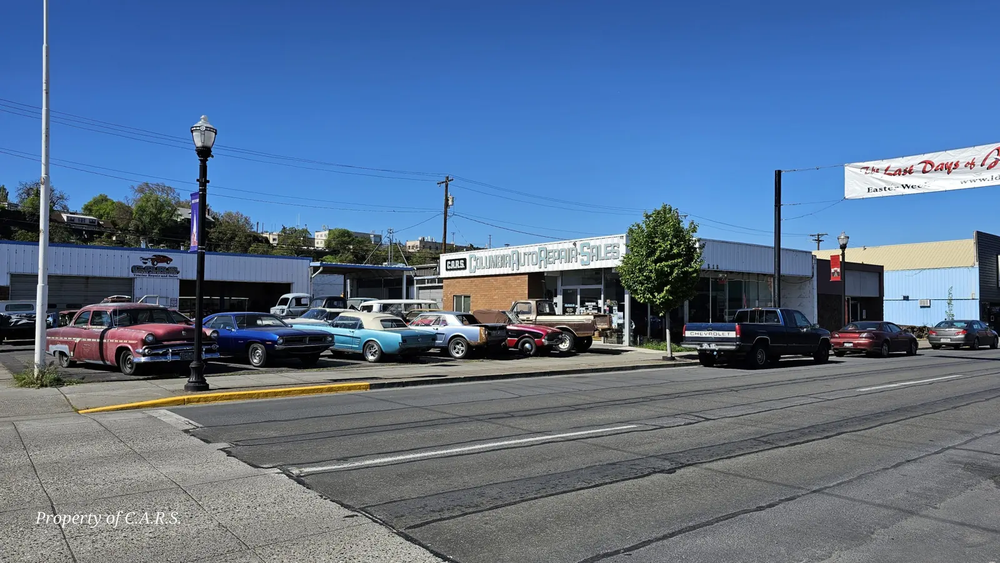
Restoration & Repair
Classic auto restoration, automotive and trailer repairs, and vehicle appraisals, serving The Dalles and the Columbia River Gorge since 1997.
- Serving the Gorge since 1997
- Family owned & operated
- Classic restorations
- Licensed vehicle appraisers
Our business is you and your car
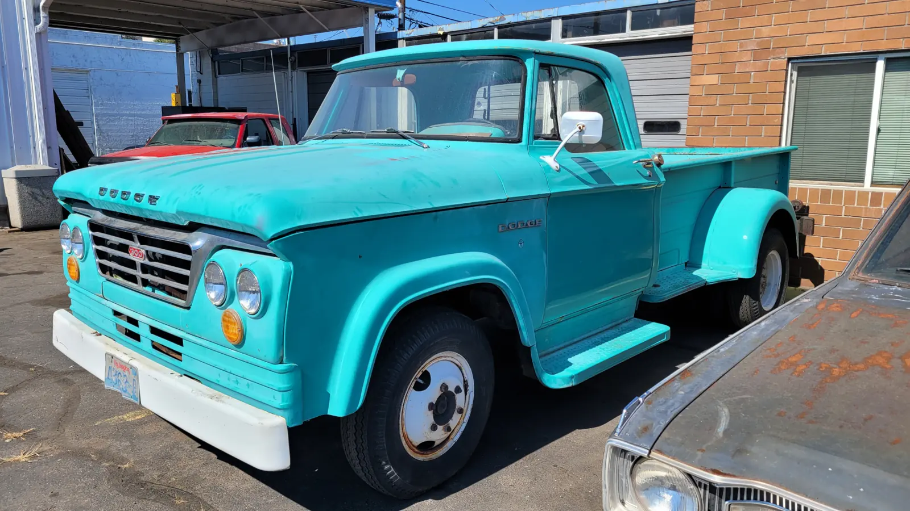
Classic Auto Restoration
30s to 80s classic cars and trucks.
Learn more →
Auto Repair
Honest repairs for locals and travelers alike.
Learn more →
A/C & Cooling
A/C recharges, radiators and cooling systems.
Learn more →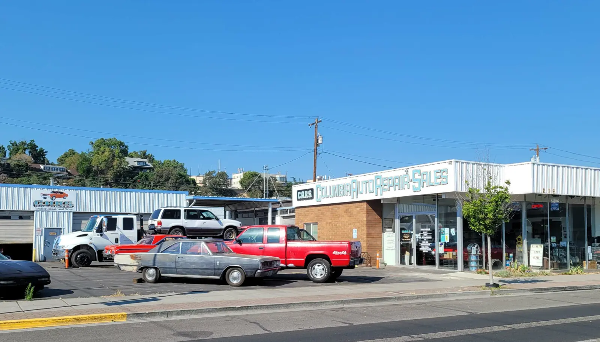
Trailer Repair
Light and heavy-duty trailer repairs.
Learn more →
Appraisals & Inspections
State of Oregon licensed vehicle appraisers.
Learn more →
Industrial Steam Cleaning
Steam cleaning at our facility.
Learn more →What customers say
By far the best experience I've ever had with an auto shop. Long story short, I am military and was driving cross country with my 3 kids and two dogs when my radiator blew. They took me in like family and got the work done in a hour and had me back on the road with an amazing price.
The absolute best service! They will not try to sell you something you don't need, but are very honest about what you do need to have repaired. In fact, it is a family business through and through, and at least one of the granddaughters is a grease monkey right and proper. She actually did my tune-up!
After being stranded in Biggs Junction for the weekend with a failed fuel pump and getting no help from the local shop there, I called C.A.R.S. & spoke with Shelby, he told us he could get us in as soon as we got there. He had us back on the road in just a few hours at a very reasonable cost.
Wow, amazing old-school service! Midway on a road trip with my baby and wife, I noticed the AC in my Honda wasn't performing well. These folks got me in same-day and recharged my AC for a very good price.
Very helpful, kind and honest repair shop. They are willing to give advice and upfront about what things cost and competitive prices. Will visit again, thank you
I was passing through Biggs Junction, and had a problem with the trailer hitch on my pick up truck. Called around, and Randy's crew stepped up and managed to slip us in to replace the hitch. Very reasonable price, prompt service, and oh-so happy customer.
Family owned since 1997
In 1997, we began as an automotive sales and repair facility. Ten years later, C.A.R.S. added classic car restoration and light and heavy-duty trailer sales. Today we focus on automotive restorations, automotive and trailer repairs, and appraisals.
A family owned and operated business, our staff value our customers' loyalty and commitment to shopping locally and supporting small businesses. We are passionate about our industry and do our best to bring our knowledge to you.
We do our best to treat our clients like we would treat our friends and family. Please feel free to stop by with your auto repair, restoration, or trailer repair questions.
Restoration projects
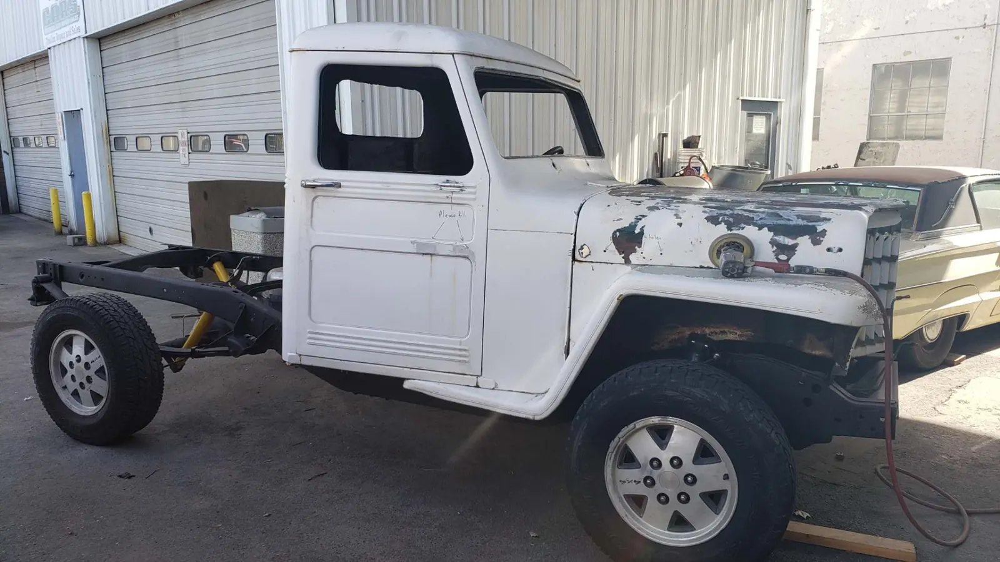
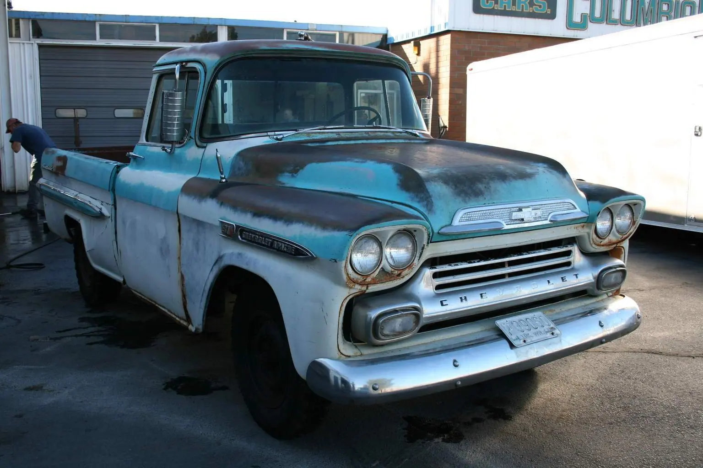
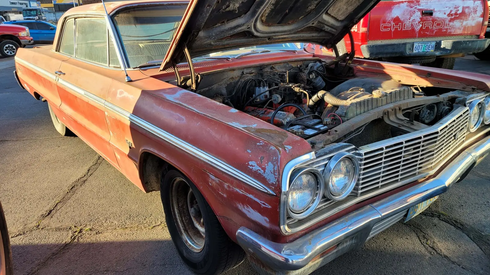
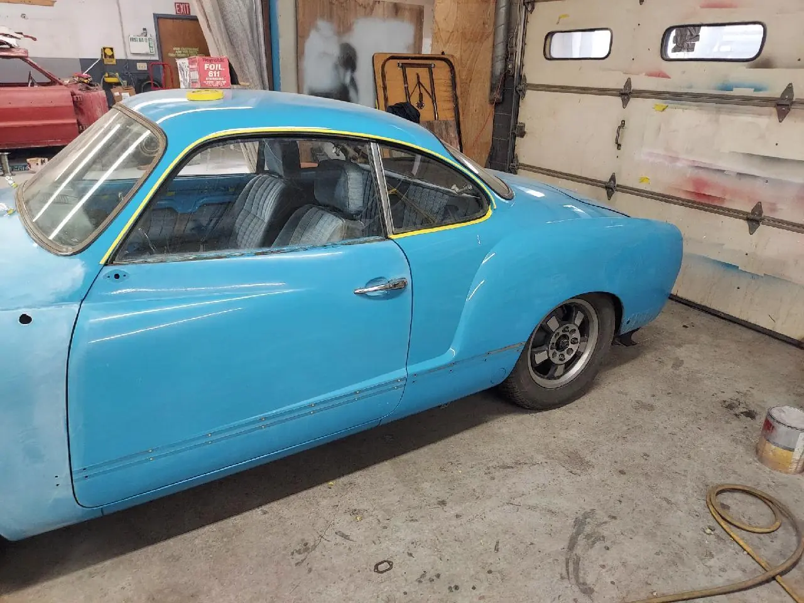
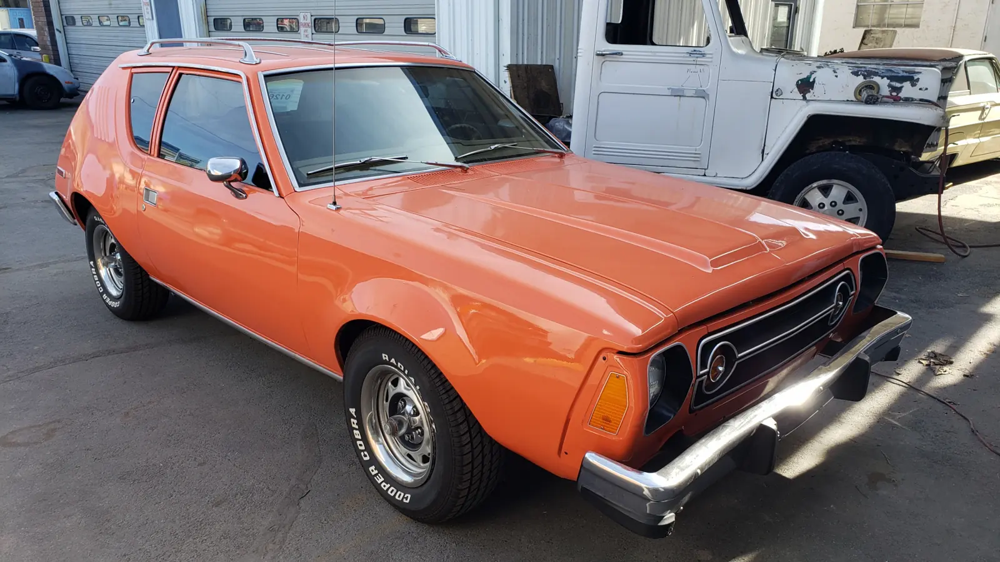
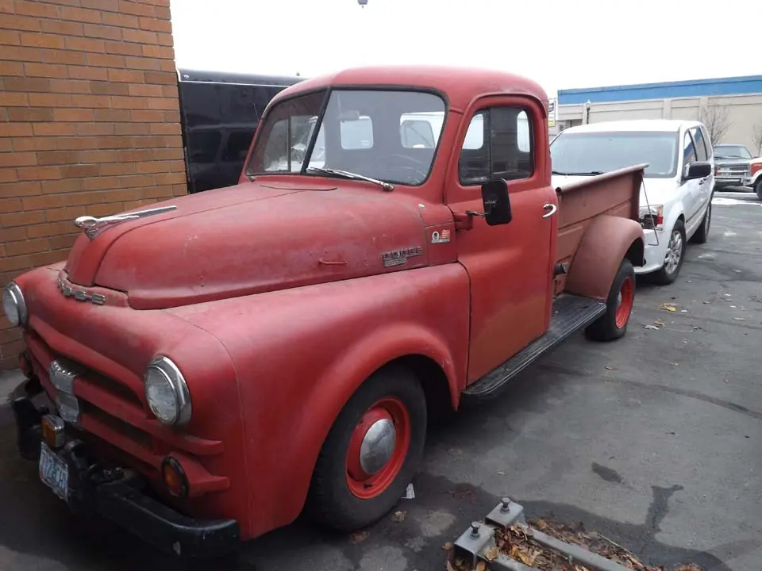
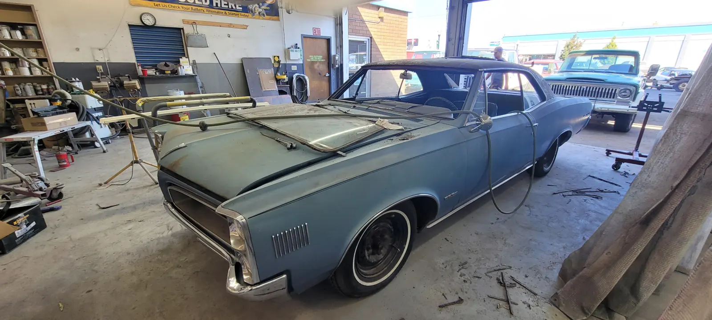
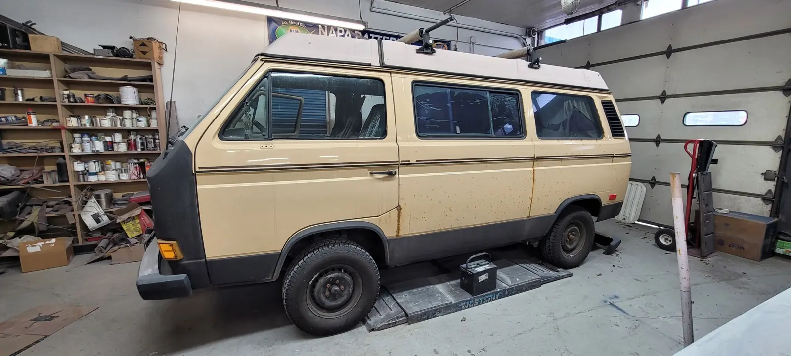
What's going on with your car?
Tell us about your car, truck or trailer and we'll get back to you. Or call (541) 296-2094, Monday to Friday, 8am to 5pm. For a restoration, please call or stop by before bringing the vehicle down so we can be sure we have an opening.
- (541) 296-2094
- sales@gorgetrailers.com
- 518 E. 2nd St, The Dalles, OR 97058 · State of Oregon licensed vehicle appraisers